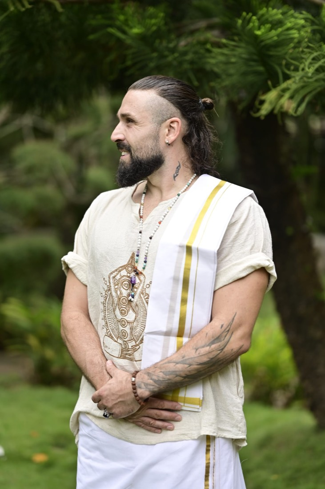
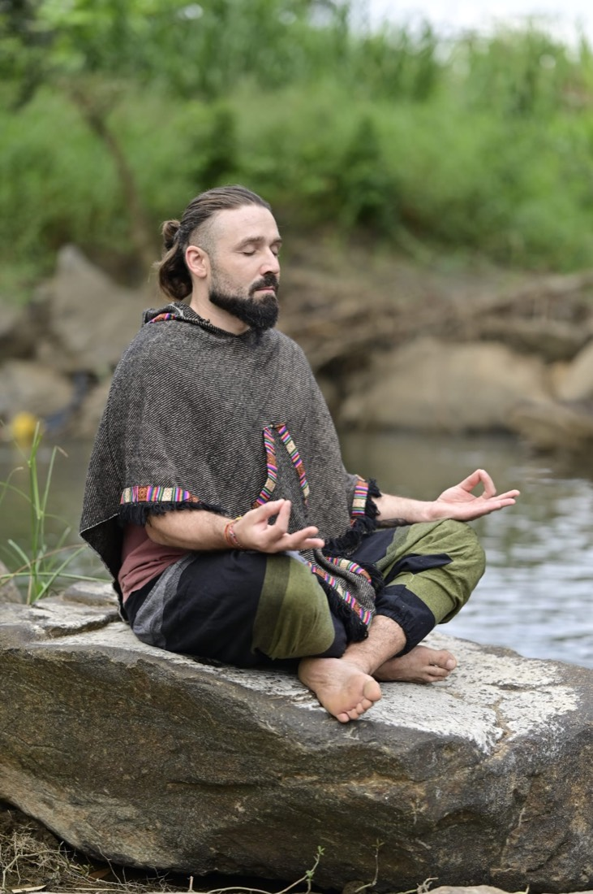
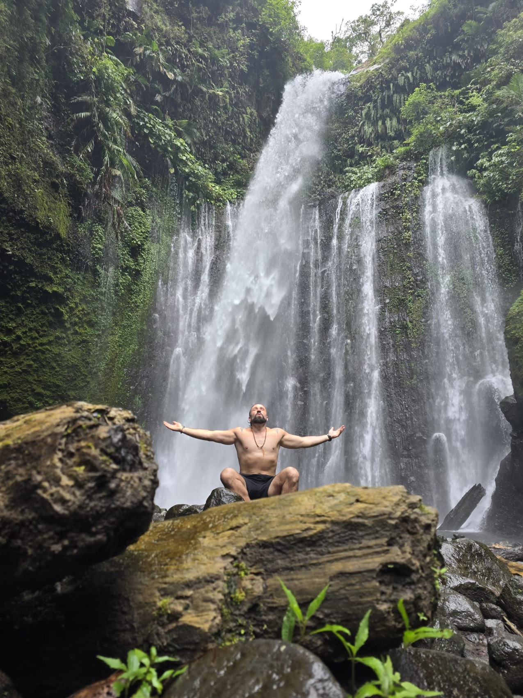

Ich bin viel unterwegs und nehme zwei Dinge überallhin mit: meine Hände für die ayurvedische Massage und meine Drohne für Bilder, die von oben erzählen.
Ich bin kein digitaler Nomade und auch kein Aussteiger. Ich bin einfach gern in Bewegung — und überall, wo ich ankomme, kann ich etwas geben. Mal sind das ruhige, tiefe Massagen. Mal sind das Aufnahmen, die einen Ort von oben zeigen, wie ihn sonst niemand sieht.
Wer mir auf Instagram folgt, ist live dabei, wo ich gerade bin. Und wer eine Massage oder ein Video braucht, schreibt mir einfach — die Wege sind kurz, der Kontakt läuft über WhatsApp.
Meine GeschichteMein Herzstück. Ausgebildet in Sri Lanka, mit echter Leidenschaft für die ayurvedische Tradition. Dazu Lomi Lomi und Thai-Massage.
Immer mit der Drohne im Gepäck. Aufnahmen aus der Luft und am Boden, geschnitten zu kleinen Filmen — für Orte, die man sehen muss.
Ayurveda ist für mich mehr als eine Technik — es ist eine Art, einem Menschen zu begegnen. Mein Schwerpunkt und meine Leidenschaft liegen in der ayurvedischen Massage. Wenn du es anders magst, gebe ich dir auch Lomi Lomi oder eine Thai-Massage.

Wo ich bin, ist die Drohne meistens dabei. Ich liebe es, einen Ort einzufangen — die Bucht, das Hotel, die Finca von oben — und daraus einen kleinen Film zu schneiden, der Lust macht, genau dort zu sein. Ideal für Ferienwohnungen, Hotelanlagen, Restaurants und alles, was aus der Luft am schönsten wirkt.
Geboren in Ungarn, zu Hause da, wo ich gerade bin. Mein Weg hat mich über Sri Lanka zur ayurvedischen Massage geführt und gleichzeitig zur Liebe für Bild und Bewegung. Beides gehört zu mir.
Meine ganze Geschichte
Instagram ist mein Logbuch. Wenn du wissen willst, in welchem Land ich gerade die Drohne steigen lasse oder wo ich die nächsten Massagen gebe — folge mir. Da passiert alles zuerst.

Auf Wunsch kann hier später der Live-Feed direkt eingebettet werden.
Du hast Lust auf eine Massage, wo ich gerade bin? Oder du brauchst ein Video von deiner Ferienwohnung, deinem Hotel, deinem Lieblingsort — gern aus der Luft? Eine Nachricht reicht.
WhatsApp-Nummer ist Platzhalter (wa.me/000000000) — echte Nummer einsetzen.